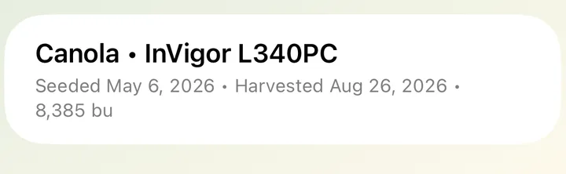
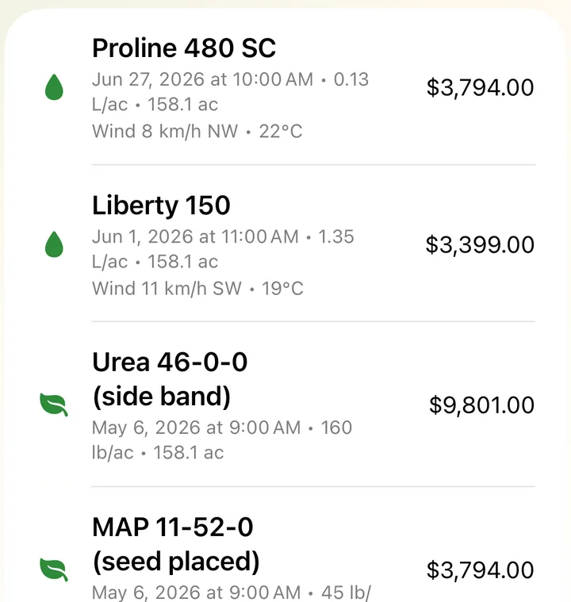

Crops, sprays & profit
Keep each field's crop, sprays and inputs as you go. AgSaver fills in the weather for spray records, shows you the spray window, and works out yield and profit at harvest.

What each field grew, every year
For every field and year, record the crop and variety, seeding and harvest dates, bushels harvested and other costs such as land rent, crop insurance or custom work. The field keeps a crop history you can look back on.
- Crop, variety, seeding and harvest dates
- Bushels for the whole field, shown as bu/ac
- Other costs for the whole field
- Crop history with past yields

Spray records that fill themselves in
Log each spray, fertilizer, seed or other product with its rate, acres and cost. Spray records usually need the wind speed, direction and temperature at the time of application, so tap Fill from Weather and AgSaver gets them from Apple Weather for that field at that date and time.
- Rate per acre, total product used and cost
- Wind speed, direction and temperature
- Spray Records report for the whole farm, by year and type
- Share the year's spray records as a PDF

An hour-by-hour spray window
The weather card on the dashboard shows conditions now and for the next 12 hours, with wind and temperature for each hour and a simple spray-window check from wind, temperature, humidity and rain.
- Wind speed, gusts and direction
- Next 12 hours at a glance
- Uses your location, or your first field when location is off
- Turn the weather card on or off in Settings

Profit per field and per acre
Add the price and bushels at harvest and AgSaver shows the field's yield, revenue, inputs, fuel, other costs and profit, as totals and per acre. Fuel is estimated from the work sessions in that field.
- Yield in bu/ac
- Revenue, inputs, fuel and other costs
- Profit per field and per acre
- Compare years in the crop history

Records you can hand to anyone
Clean records for your agronomist, crop insurance, landlord or your own planning.
Spray records PDF
One PDF with every spray and input for the year, filtered by type, with conditions for each application.
Conditions on record
Wind speed, direction and temperature saved with each spray, filled in from Apple Weather or typed in.
Your currency
Costs and revenue in the currency you choose in Settings.
Crop history
Every year's crop, variety and yield stays with the field.
Applied acres
Each record keeps the acres it covered, with totals for the farm.
Any product
Herbicide, fungicide, fertilizer, seed or anything else you put on a field.
More of what AgSaver does
Put every hour and every acre to work.
AgSaver runs on iPhone, iPad and Apple Watch. Your records stay on your devices and your own iCloud.
 Scan to download
Scan to download